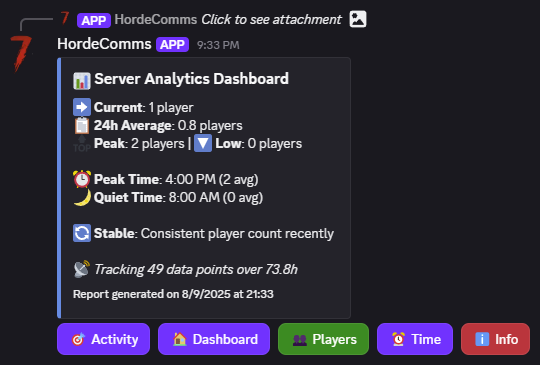
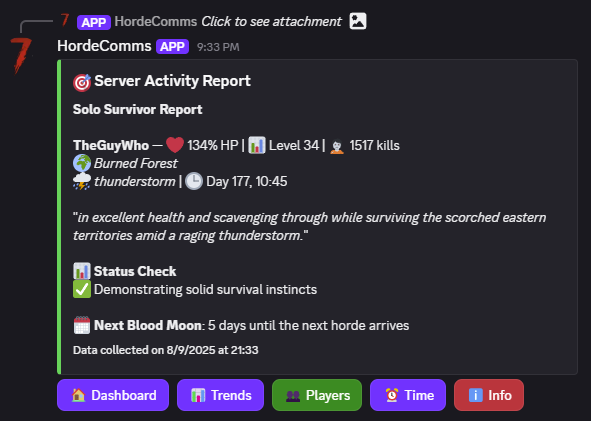

Survivor Notes
Player & Server Trends
Track online counts, restarts, and latency. Spot issues before disaster strikes.
Activity Reports
Daily summaries of logins, deaths, chat, and events sent to Discord. Stay informed, stay alive.
Horde Night Alerts
Polite, rate-limited blood moon warnings. No spam, just survival-critical info.
Safe Server Controls
Scoped commands for restart, say, moderation—no raw telnet noise. Control with confidence.
Survivor Photos




Install DeadLink
# Docker install command
>
docker run --name deadlink \-e DISCORD_TOKEN=... \
-e TELNET_HOST=... \
-e TELNET_PASS=... \
ghcr.io/thecdrz/deadlink:latest
# HUD initializing...
[OK] Telnet connection secured.
[OK] Discord link established.
[INFO] DeadLink operational. Apocalypse HUD active.